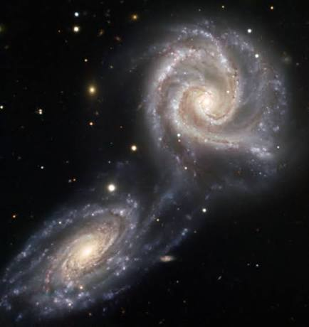
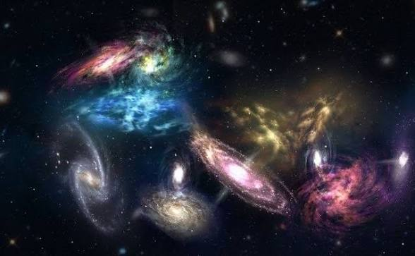
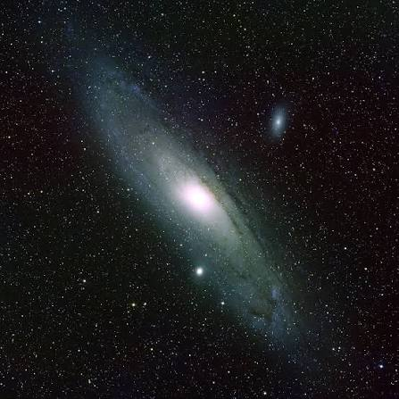
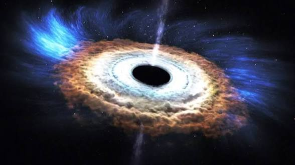
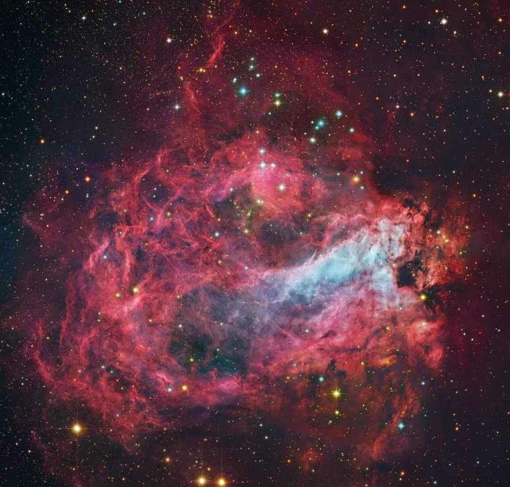
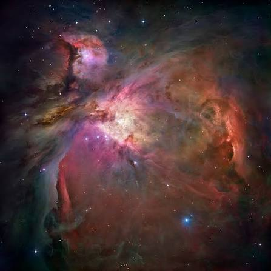

DATOS CURIOSOS

Galaxias:
Hay más de 2 billones de galaxias en el universo observable.

Nuestra Vía Láctea chocará con la galaxia de Andrómeda en
unos 4,500 millones de años y formarán una sola.

En el centro de casi todas las galaxias hay un agujero negro
supermasivo que pesa millones de veces más que el Sol.

Nebulosas:
Son las guarderías de estrellas, ahí es donde nacen nuevas estrellas.

La Nebulosa de Orión se puede ver a simple vista desde la Tierra,
está a 1,344 años luz.

La Nebulosa del Cangrejo es lo que quedó de una estrella que explotó
en 1054 y los chinos la vieron brillar de día.